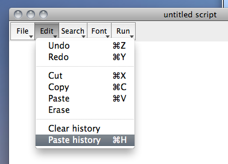
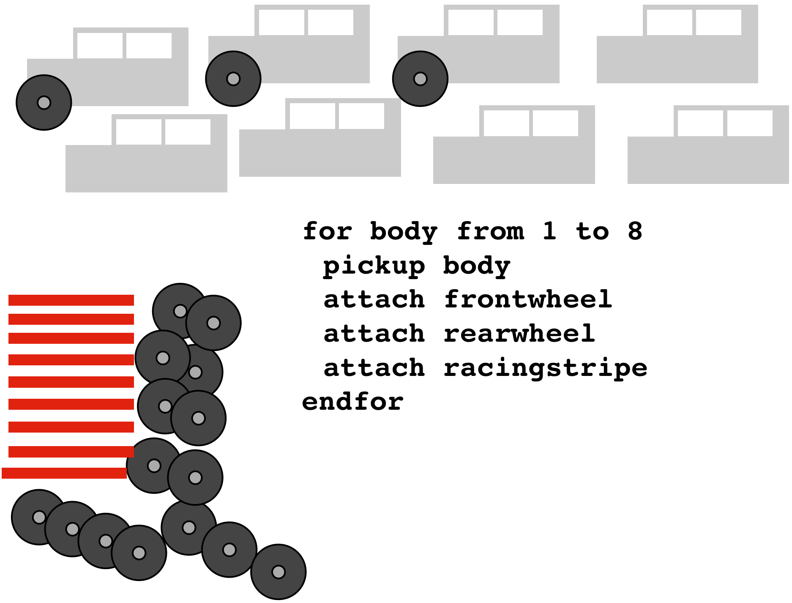

Will Styler - Fall 2016
| ### What you cannot do with Praat scripting |
| * Label your data/speech recognition * You can label known data with “Forced Alignment” |
| * Work with programs that aren’t Praat (*) |
| * Run statistics on your data |
| * … but you can dump your data into R! |
| * Anything that you can’t, eventually, do through the Praat UI |
| * Generate measurements as consistent as hand measurements |
| * … but you can definitely do some things more easily! |
When scripting, you will need to be a bit more specific than you would with a human…
# This is a comment, Praat ignores lines that start with #
# Get the selected sound
soundname$ = selected$ ("Sound")
select Sound 'soundname$'
# Rename it!
Rename... 'soundname$'_resampled
# Resample it, then write to file!
Resample... 10000 50
Write to WAV file... ‘soundname$‘_10000.wavPraat has changed some of the scripting commands to become “more modern”
Let’s automate something you do all the time, in the same way each time
Like making a broadband vs. narrowband spectrogram

Now, open a sound, and narrow the spectrogram
Then, go to the script window and “Paste History”

You now have a few lines, one of which looks like …
Spectrogram settings… 0 5000 0.05 50
That’s your first script. Make that line the only thing in the script window
Now save the script someplace handy, narrowband.praat
Now, you can add it to any menu as described in Section 11.2.2 of Using Praat for Linguistic Research
You just wrote your first Praat script!


“Remember whats-his-name, that guy who brought the great pecan pie last year?”
“Yeah…?”
“Invite whats-his-name to Thanksgiving this year!”
whatshisname$ = Find guy who brought pecan pie
party-invite whatshisname$
variable = 1000
variable = Get number of intervals... '1'
start = Get starting point... 1 2
end = Get end point... 1 2
midpoint = start + ((end - start) / 2)f3h = Get third formant
length = (1715/(4 * f3h))
lcm = length * 100
print Your vocal tract length is 'lcm:1' cmSometimes, you want to automate more than one command
You can put multiple lines into a file, and Praat runs through them at a single command!
# Get the selected sound
soundname$ = selected$ ("Sound")
select Sound 'soundname$'
# Rename it!
Rename... 'soundname$'_resampled
# Resample it, then write to file!
Resample... 10000 50
Write to WAV file... ‘soundname$‘_10000.wavYou can write scripts of various degrees of complexity
Some scripts run a single command quickly, and act as a new button
Some scripts run a large process, but keep the user involved
Some scripts go through a large process on their own, without your help
Praat doesn’t know what a vowel is, and can’t find them natively
Sound files are annotated for Praat by making “TextGrids”.

Once you’ve got files and textgrids, you can then pull in a whole batch of files
Praat can do something to every one of those files.
This happens through the magic of…
Let’s say you’re building a lot of toy cars…


For loops iterate through large amounts of data, doing the same thing each time.
They always have the format for [var] from 1 to [other var], followed by an indented block, ended with an endfor
select TextGrid Sound1
number_intervals = Get number of intervals... 2
for k from 1 to number_intervals
int_start = Get starting point... 1 'k'
int_end = Get end point... 1 'k'
int_duration = (int_end - int_start)
print int_duration
endfor
# This code gets the duration of every interval and prints it |
|---|
|  |

Used when a given action happens only if another condition is met
Usually take the form if [var] = [value], indented block, endif
| ### If you want an example… |
| select TextGrid Sound1 number_intervals = Get number of intervals… 2 for k from 1 to number_intervals int_label$ = Get label of interval… 1 ‘k’ if int_label$ = “v” int_start = Get starting point… 1 ‘k’ int_end = Get end point… 1 ‘k’ int_duration = (int_end - int_start) print int_duration endif endfor |
# at the start of the line means ‘comment’, Praat will ignore the line
Adding a :number to a variable name ( variable:2 ) will round to that number of decimal places
The print command will print whatever follows it into the info window
Don’t put decimals or unicode in Filenames
The symbol for “not equal to” is <> in Praat, rather than != or something sane
You’ll have to describe folder/file locations differently on a Mac vs. Windows
Praat won’t always agree with itself from window to window
A single quotation mark can be your worst enemy
Humans only make sane measurements, computers don’t care
You know that his F0 is not 3000 Hz. Praat doesn’t.
You can figure out easily if the formant track is right. It definitely can’t.
Praat is a black box sometimes
You need to double-check everything, or your data could be subtly wrong
Your script will crash more times than it runs
Look at the error message, look at the line number it mentions, start there
Sometimes, the error message will give you good information
print the contents of variables, to make sure it’s getting the right values
Use the “fail” command to crash the script at a given point (to make sure the script is getting there at all).
Automating a task will cost you time. Will you gain enough back?
Automating a task will add noise. Can you handle that?
Automating a task will remove control. Do you need to have control?
Time spent coding something is regained when you reuse it
You can build on your past approaches
Re-running the data basically comes free.
Most importantly, though…
You feel like a wizard.

It’s actually really good


If you find a script that does 90% of what you want, just add the 10% yourself
Give the author of the code credit with a comment
Don’t trust anybody else’s math
Some code is just bad
https://github.com/stylerw
Even after 10 years, I still have to debug everything I write, and regularly screw up.
You will get 50 crashes, caused by 50 little mistakes
You will question why you’re bothering with this, and where your life went wrong
You will feel like you are alone in your pain
You’ll realize that your script hasn’t crashed
… and that data is pouring into the designated file
… and that the data looks OK
… and then, eventually, you have the greatest realization ever

Download useful examples (as well as a fun guide on using Praat) from:
http://savethevowels.org/praat/
# This part presents a form to the user
form Measure Formants and Duration
comment Sound file extension:
optionmenu file_type: 2
option .aiff
option .wav
endform
directory$ = chooseDirectory$ ("Choose the directory containing sound files and textgrids")
# This will need to be changed to \ below for PC users
directory$ = "'directory$'" + "/"
resultfile$ = "'directory$'"+"formantlog.txt"
header_row$ = "filename" + tab$ + "vowel" + tab$ + "Duration" + tab$ + "F1" +
tab$ + "F2" + tab$ + "F3" + newline$
fileappend "'resultfile$'" 'header_row$'# List of all the sound files in the specified directory:
Create Strings as file list... list 'directory$'*'file_type$'
number_files = Get number of strings
# This opens all the files one by one
for j from 1 to number_files
select Strings list
filename$ = Get string... 'j'
Read from file... 'directory$''filename$'
soundname$ = selected$ ("Sound")
filedur = Get total duration
# identify associated TextGrid
gridfile$ = "'directory$''soundname$'.TextGrid"
if fileReadable (gridfile$)
Read from file... 'gridfile$'
select TextGrid 'soundname$'
number_intervals = Get number of intervals... 1# Go through each item
for k from 1 to number_intervals
select TextGrid 'soundname$'
int_label$ = Get label of interval... 1 'k'
#checks if interval has a label
if int_label$ <> ""
# Calc start, end, and duration of interval
intstart = Get starting point... 1 'k'
intend = Get end point... 1 'k'
intdur = intend - intstart
intmid = intstart + (intdur / 2) # Get all the formants!
select Sound 'soundname$'
To Formant (burg)... 0 5 5500 0.025 50
intf1 = Get value at time... 1 'intmid' Hertz Linear
intf2 = Get value at time... 2 'intmid' Hertz Linear
intf3 = Get value at time... 3 'intmid' Hertz Linear
# Dump results into a file.
result_row$ = "'filename$'" + tab$ + "'int_label$'" + tab$ + "'intdur'" + tab$ +
"'intf1'" + tab$ + "'intf2'" + tab$ + "'intf3'" + newline$
fileappend "'resultfile$'" 'result_row$'
endif
endfor
endif
endfor
# That's all!